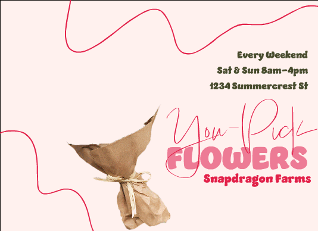

The purpose of this project was to create an animated product advertisement for a product or service. I chose to create an advertisement promoting a faux flower farm's you-pick hours. The ad includes line art with text promoting that customers can come to Snapdragon Farms every weekend from 8am to 4pm for “You-Pick Flowers.” The animation aspect starts with an empty paper bouquet holder that automatically fills with blooms. The flowers pop up out of the bouquet one by one grouped by their type. This emulates the act of hand-picking and choosing the types of flowers a customer would want to add to their bouquet and bring home to display.
